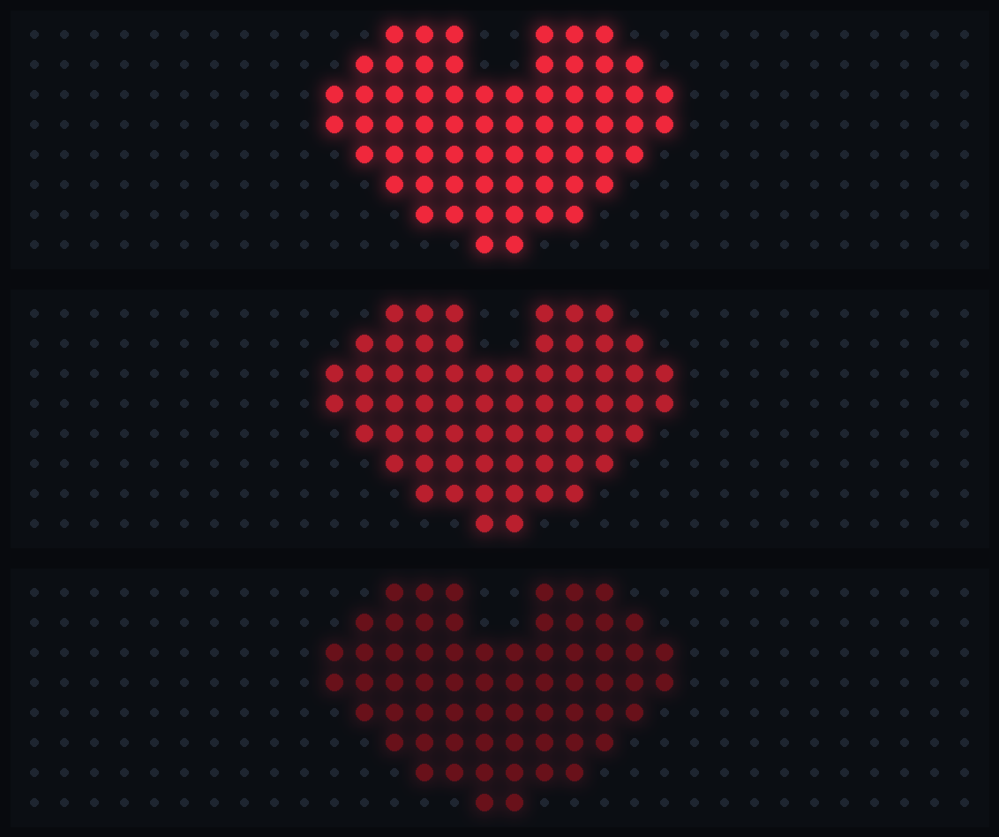

心跳亮度阶段示意 · 非硬件实拍SPARK'S FIRST PROJECT
爱心点阵一颗会跳动的心。
Arduino UNO、四片级联的 MAX7219、五根杜邦线。让爱心保持形状，用亮度变化做出“咚—哒”的节奏。
- 8 × 32LED 点阵
- 1.1 秒心跳周期
- SPIArduino 内置库

我的工作台
MY FIRST BUILD / 2026.11.25
从一块点阵开始，
让心里的想法真的亮起来。

心跳亮度阶段示意 · 非硬件实拍SPARK'S FIRST PROJECT
Arduino UNO、四片级联的 MAX7219、五根杜邦线。让爱心保持形状，用亮度变化做出“咚—哒”的节奏。
THE REFERENCE SHELF
文档、学习笔记与收藏链接。
少一点杂乱，多一点真正用得上的内容。
NOTES FROM THE BENCH